第一话「尚且无名的心情」
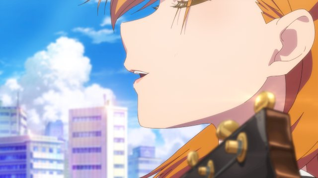
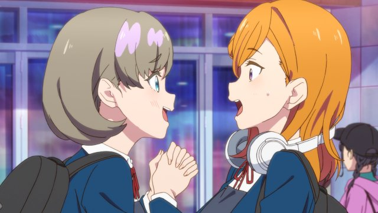
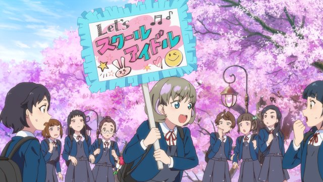

在东京的表参道、原宿、青山三条街之间设立的新学校“结丘女子高等学校”，涩谷香音参加了音乐科的专业考试。但是在唱歌的实际技能考试中失败了，香音只能考进学校的普通科。这时，从上海来的少女唐可可突然出现在香音的眼前。和香音一样考进结丘的普通科的她，说想和香音一起开始学园偶像活动。虽然香音拒绝了，但还是热情地帮助可可招收部员。
第二话「学园偶像禁止!?」
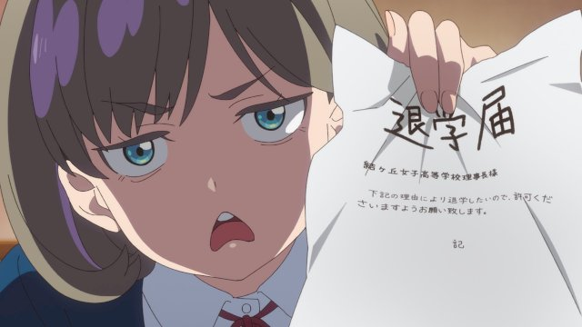
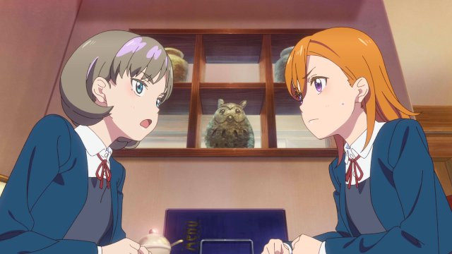
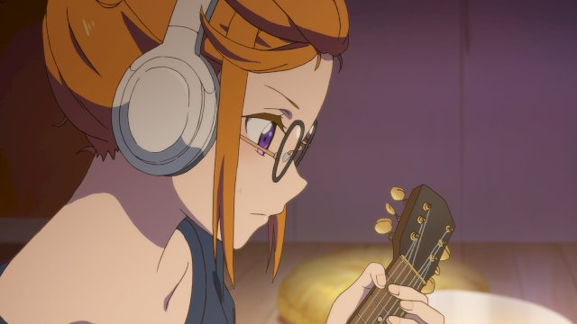
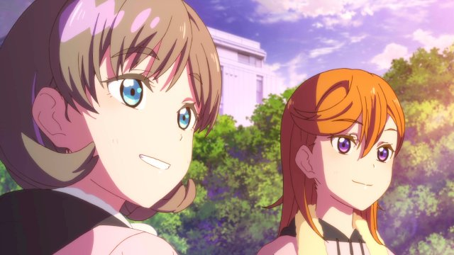
果然我还是喜欢唱歌!意识到自己的心情的香音，决心成为学园偶像。但是音乐科的叶月恋认为结丘不需要学园偶像，拒绝了可可的社团申请书。香音想抓住恋的弱点，在音乐科的学生兼青梅竹马的岚千砂都的帮助下收集情报。但是别说弱点了，结丘很多学生都信赖着恋。这时，香音她们突然被校长喊了过去————。
第三话「可香」
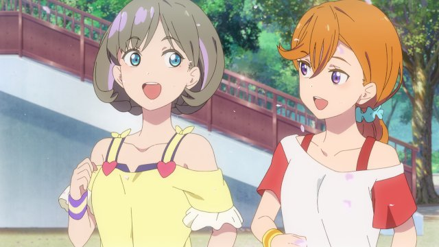
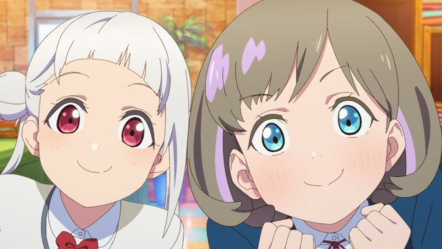
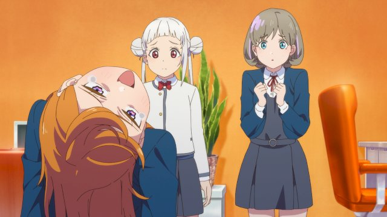
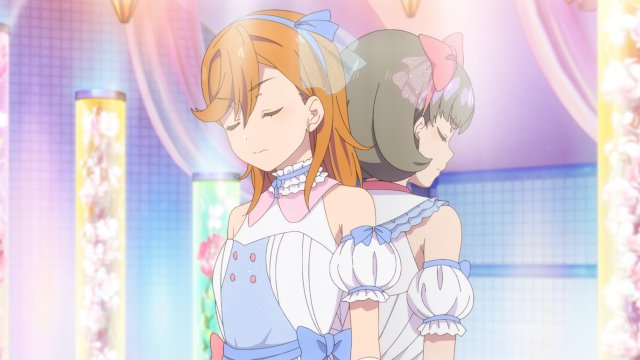
要想继续学园偶像活动，就必须在当地的代代木学园偶像节上获得第一名。千砂都和可可，为了让不能在人前唱歌的香音成功唱出来，做了各种尝试，但是都没有结果。对于失落的香音，可可笑着鼓励她说这次的演唱她会自己一个人唱，香音只要和她一起站在舞台上就行了。在这样的情况下，突然传来了在全国屈指可数的强队中的组合“sunny
passion”将参加香音她们的比赛的消息。
第四话「街角银河☆彡」
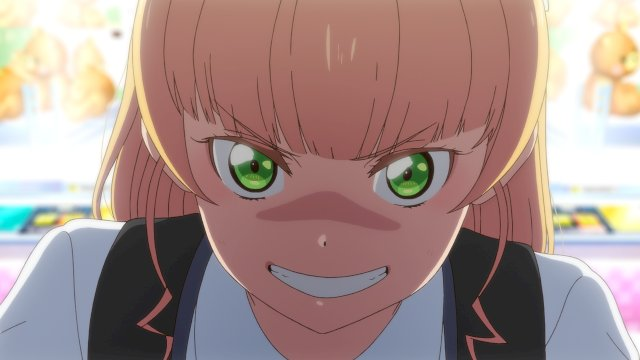

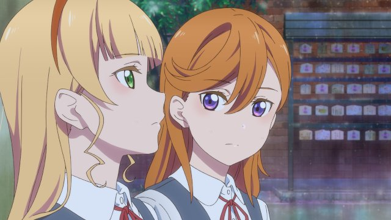
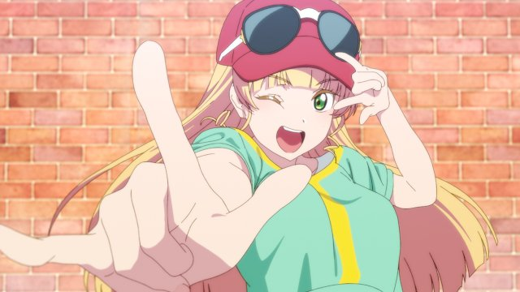
在代代木学园偶像音乐节上，“可香”遗憾地与第一名失之交臂。但是，她们获得了新人特别奖，在网络上的粉丝也增加了，校长也允许她们继续进行学园偶像活动。但是，恋的脸上的表情却写满了不满。另一方面，以可香为契机对学园偶像产生兴趣的平安名堇，决心这次一定要在商业界成为主角，加入了学园偶像同好会。但是，要由谁来担任C位呢————？
第五话「Passion Island」
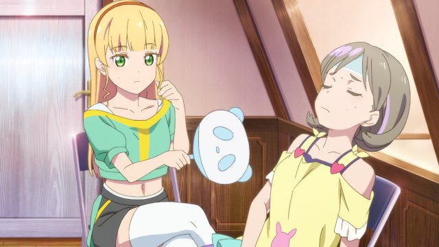
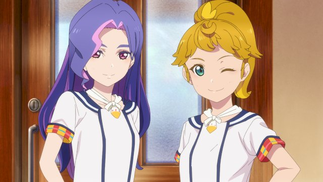
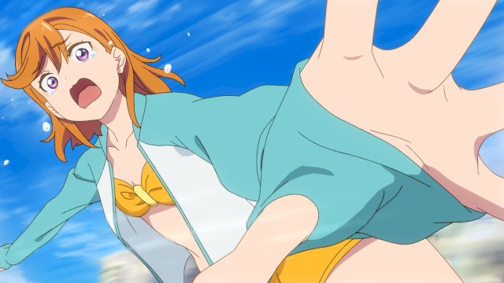
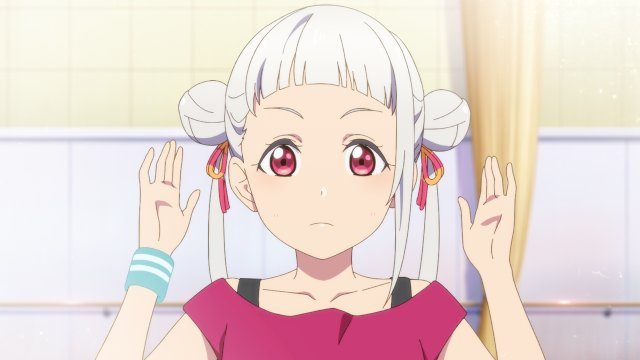
结丘学园偶像同好会因为新成员堇的加入变成了3人。正值夏日，因为酷暑，大家都累得精疲力尽，正在香音家里休息的时候，来了意料之外的访客。原来是sunny
passion的柊摩央和圣泽悠奈。两人邀请香音她们在sunny
passion的故乡——神津岛举行的学园偶像演唱会上担任嘉宾。3人都很高兴，但是因为舞蹈大赛即将来临，千砂都的脸上露出了复杂的表情————。
第六话「我梦寐以求的」
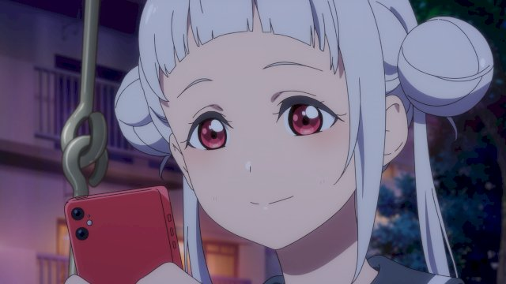
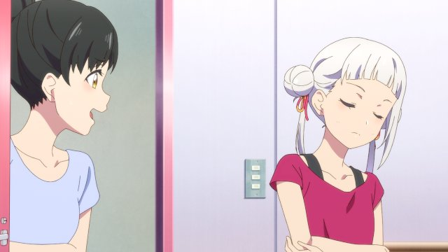
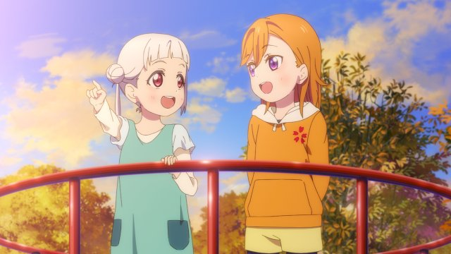
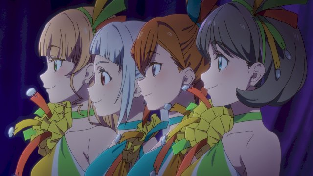
向着神津岛的演唱会出发，sunny
passion的两人正和香音她们一起努力训练。与此同时，在结丘的教室里，千砂都正在为舞蹈大赛进行特训。恋也看到了千砂都努力练习的样子，但是，恋无意间看到了从千砂都书包里掉出来的退学申请书。晚上，香音和千砂都正在打电话，可是两人的对话却显得有些陌生————。
第七话「决战!学生会长选举」
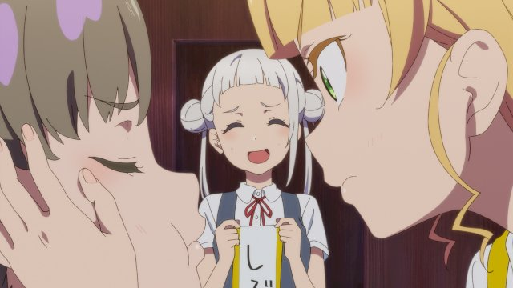
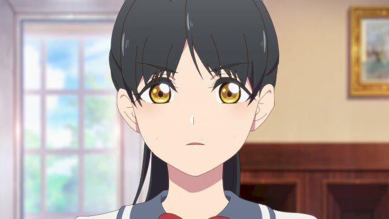
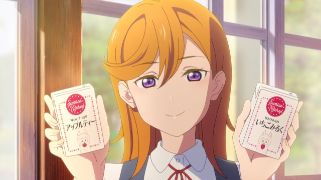
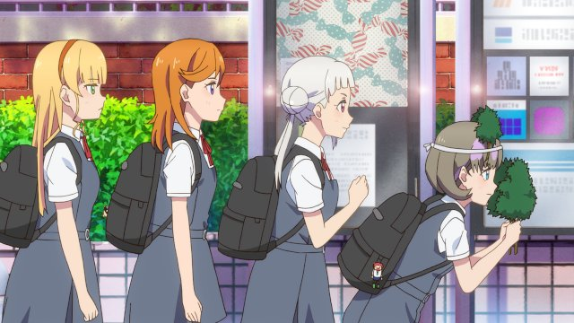
在神津岛的演唱会顺利结束，学园偶像同好会也因为千砂都的加入变成了4人。怀着新的心情迎接新学期的大家，知道了随着学生会的成立，学生会会长选举也正在进行的事。如果恋成为学生会会长的话，可能会影响到学园偶像的活动。大家都想让香音去参加选举从而可以继续学园偶像活动。另一方面，香音很好奇恋为什么这么讨厌学园偶像————。
第八话「紧紧相连的心意」

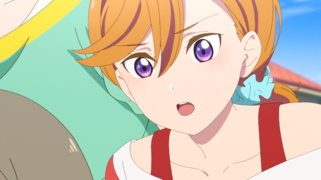
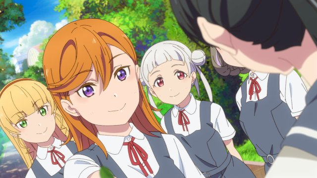
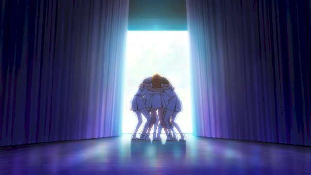
恋独自一人背负着管理好去世的母亲留下的结丘高校的重担，因为不想被人知道这件事，所以恋请求香音她们不要把事情说出去。但是，学校的大家都不知道发生了什么，对于宣布学园祭只在音乐科举办的恋进行了强烈地抵制。香音向恋提议学园祭最好能在全校大会上和大家一起举办，但恋似乎还在因为某些事情烦恼着————。
第九话「你们的名字是?」
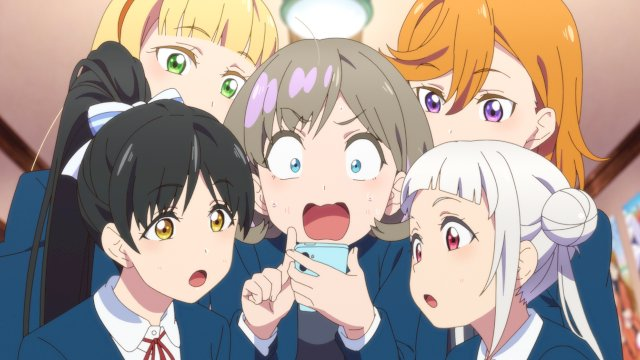
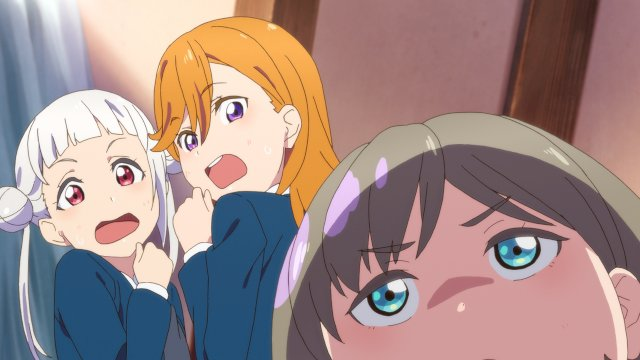
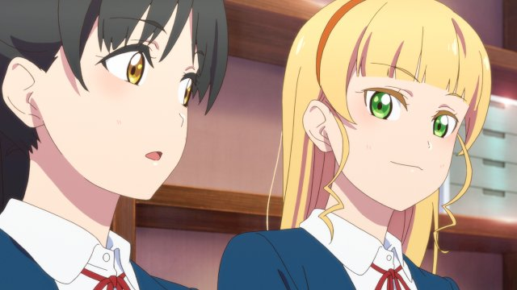
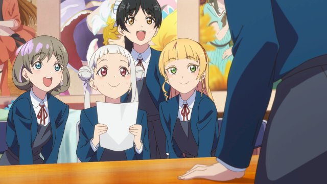
学园偶像同好会因为恋的加入变成了5人，音乐科和普通科之间的隔阂也消失了，学校里的大家相处得很好。然后，LoveLive!大赛开幕的消息也终于发布了。决赛的会场是神宫竞技场这个大舞台。在知道了选拔赛的要求后，结丘学园偶像同好会的大家就打开了比赛的报名界面。但是，在报名界面上需要填写组合名————。
第十话「Check it out!!」
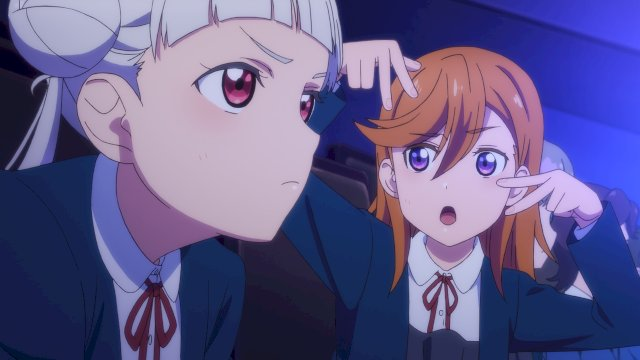
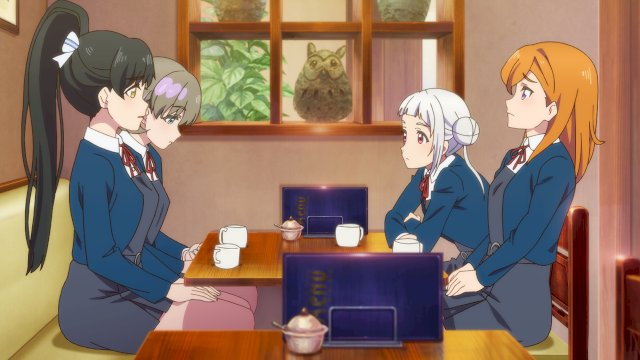
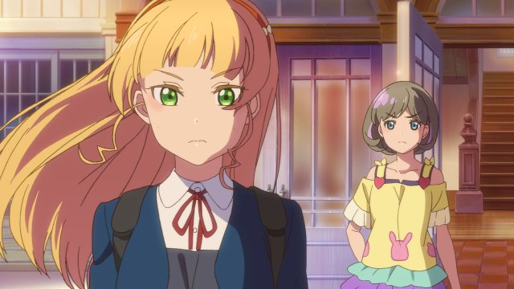
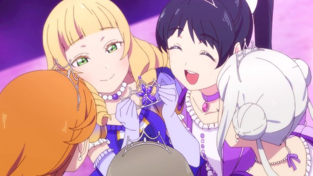
参加LoveLive!的5人，最终决定组合名为「Liella!」。在地区选拔赛的说明会上，发表了在各地区都会设置一个主题来进行表演的规则。而结丘地区的主题是说唱。Liella!还不太了解什么是说唱，然而这时堇即兴表演了一段说唱。有堇在的话说不定能行，于是香音决定让堇当C位。
第十一话「再一次，在那个地方」
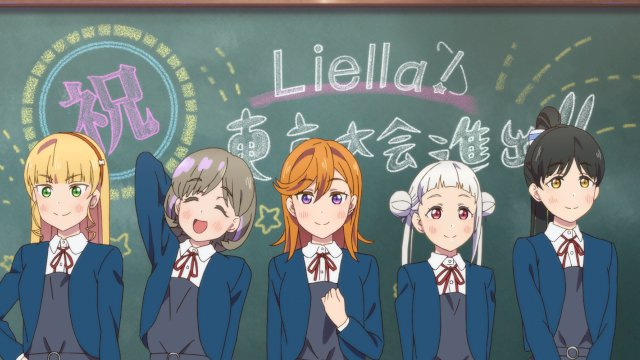

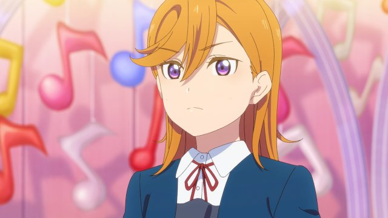
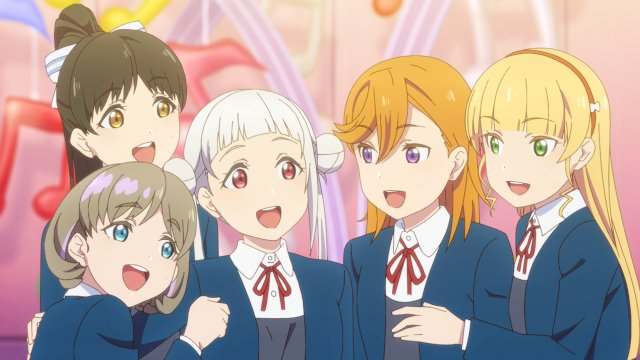
在LoveLive!地区选拔赛的舞台上，Liella!以出色的表演顺利通过了预赛。这时，香音和千砂都的小学母校向Liella!发出了委托。即使答应了，心情也很沉重吧。那个小学的舞台，曾经是香音第一次不能在众人面前唱歌的舞台。了解香音这件事的千砂都，把这件事情告诉了大家。
第十二话「Song for All」
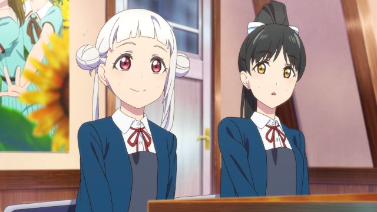
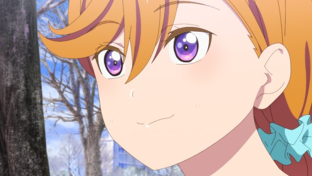
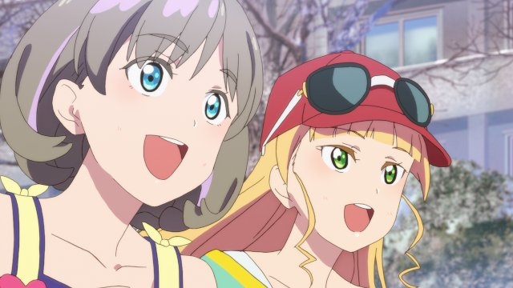
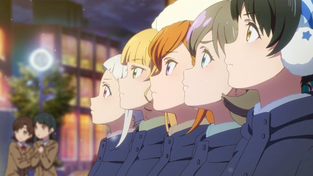
在小学母校的舞台上成功表演的香音。学校也确定可以继续运营下去。Liella!的大家都很开心，还收到了LoveLive!东京大赛的消息。消息的内容是：本次比赛形式为线上比赛，由各地区代表通过网络进行现场直播。也就是说，舞台必须由我们自己准备。大家都在想要搭建什么样的舞台，但香音却好像不太在意————。